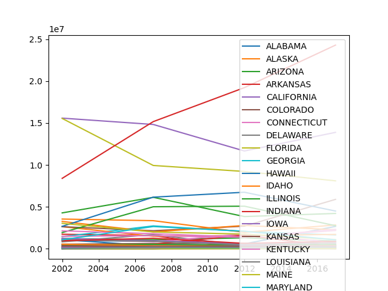
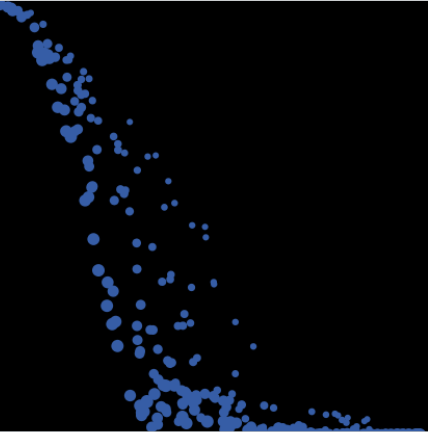

1.1.9 Flappy Bird Project 2/17/2023

For this project we attempted to create a parody version of flappy bird that did not use any lists. We attempted to learn and use threads, but without the use of lists came to the conclusion that there would be a memory leak that stops the program.
1.2.5 Minion Muncher Project 3/14/2023
This Minion Muncher project is a parody of snake, where as you collect more bananas, you would increase the number of minions following the initial minion. Contrary to the the flappy bird project, lists were used however the same problem with memory leaks when dealing with the timer for the game would interrupt the game.
Scratch Project 3/28/2023
This scratch project was very different than previous Python projects. We created a game that involved falling objects and you had to dodge them, however added a point system if you collected specific objects that don't hurt you. It involves the use of a timer and score count, as well as a leaderboard. Elements in the game change as you gain points.
3.2.4 Data Analysis in Honey Production 5/15/2023
Differing from previous game- centered projects, this involves the handling and use of data from external databases. Learning how to clean data and format imported data using code, as well as plotting data on graphs and charts using matplotlib and panda modules in Python.
4.1.4 Particle System Waterfall 5/24/2023
We used the application NetLogo to explore simulations that depict the real world, such as forest fires or waterfalls. Simplifications and bias is used to compensate for the magnitude of random factors that can affect the simulation while attempting to replicate real world scenarios.